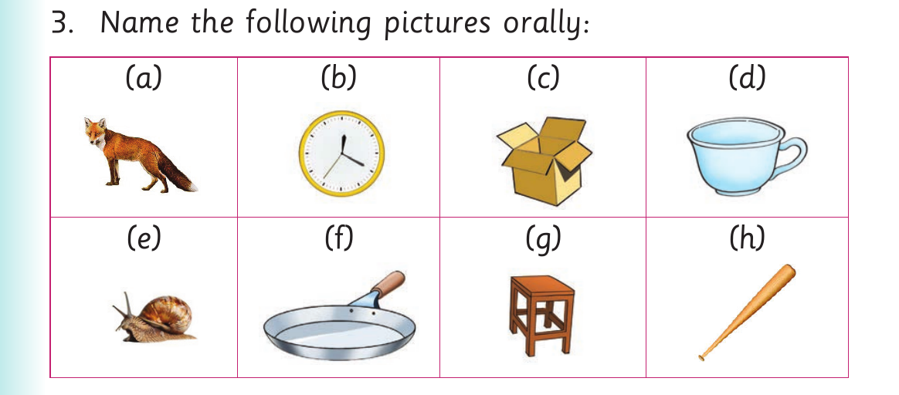

I add sounds at the beginning of words or I finger spell additional letters at the beginning of words
I add sounds at the beginning of words or I finger spell additional letters at the beginning of words.
Activity 1
1. Pronounce or sign the following words:
| car | lock | ox | nail |
|---|---|---|---|
| tool | up | at | an |
2. Add a sound at the beginning of each word in (1). Or fingerspell additional letters at the beginning of the words in (1).
3. Name the following pictures orally or using sign language:

Table contents. Picture items are labelled a, b, c, d, e, f, g, h.
Activity 2
1. Pronounce or sign the words and, and end.
2. Add a sound at the beginning of the following words: and , end. Or
fingerspell additional letters at the beginning of the following words: and, end. Make as many correct words as possible.
Examples of the word and
and- hand
and- land